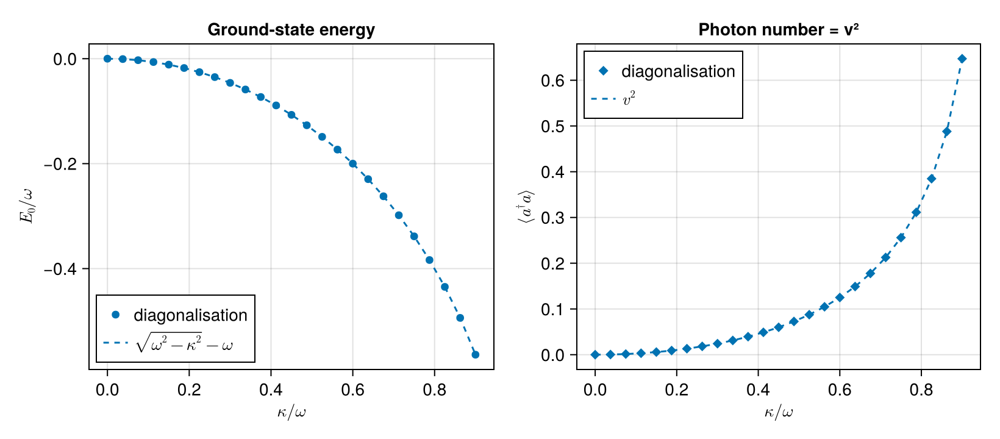

Two-Mode Bogoliubov Transformation
The two-mode squeezing Hamiltonian
\[H = \omega\bigl(a^\dagger a + b^\dagger b\bigr) + \kappa\bigl(a^\dagger b^\dagger + a\,b\bigr)\]
arises whenever a quadratic bosonic system mixes particles and holes: in parametric down-conversion, in the Bogoliubov-de-Gennes treatment of weakly interacting Bose-Einstein condensates, and in the linearised dynamics of any optomechanical or polariton system above its Hopf bifurcation. A canonical transformation
\[c = u\,a + v\,b^\dagger, \qquad d = u\,b + v\,a^\dagger\]
brings $H$ into diagonal form when $u$ and $v$ are chosen correctly. In this example we use SecondQuantizedAlgebra.jl to drive this story end to end without ever resorting to a pen-and-paper expansion: symbolic commutators, Heisenberg dynamics, vacuum expectation values, EPR squeezing, and Weyl (Wigner) symbol.
Setup
using SecondQuantizedAlgebra
ha = FockSpace(:a)
hb = FockSpace(:b)
h = ha ⊗ hb
@qnumbers a::Destroy(h, 1)
@qnumbers b::Destroy(h, 2)
@variables ω κ u v
H = ω * (a' * a + b' * b) + κ * (a' * b' + a * b)\[\kappa ab + \omega a^{\dagger}a + \kappa a^{\dagger}b^{\dagger} + \omega b^{\dagger}b\]
Canonical commutator and dispersion
Define the Bogoliubov modes and verify the commutator:
c = u * a + v * b'
d = u * b + v * a'
commutator(c, c')\[u^{2} - v^{2}\]
So $[c, c^\dagger] = u^2 - v^2$: a proper bosonic mode requires $u^2 - v^2 = 1$. The two new modes commute among themselves:
commutator(c, d), commutator(c, d')(0, 0)Try the ansatz $H = \varepsilon\,(c^\dagger c + d^\dagger d) + \text{const}$. The package canonicalises $c^\dagger c + d^\dagger d$ eagerly, returning a polynomial in the original $a, b$:
c' * c + d' * d\[2 ~ v^{2} + 2 ~ u ~ v ab + \left(u^{2} + v^{2}\right) a^{\dagger}a + 2 ~ u ~ v a^{\dagger}b^{\dagger} + \left(u^{2} + v^{2}\right) b^{\dagger}b\]
Matching coefficients with $H$:
\[\varepsilon\,(u^2 + v^2) = \omega, \qquad 2\,\varepsilon\,u v = \kappa, \qquad u^2 - v^2 = 1.\]
Squaring and subtracting yields the Bogoliubov dispersion
\[\varepsilon^2 = (\omega - \kappa)(\omega + \kappa) \;\Longrightarrow\; \varepsilon = \sqrt{\omega^2 - \kappa^2},\]
valid for $|\kappa| < \omega$. Beyond this point the system is dynamically unstable.
Heisenberg dynamics: the BdG matrix
An equivalent route is to derive the Heisenberg equations of motion and diagonalise the resulting linear system. The commutator structure pairs $a$ with $b^\dagger$ and $b$ with $a^\dagger$:
eq_a = -1im * commutator(a, H)
eq_bd = -1im * commutator(b', H)\[\kappa ~ \mathit{i} a + \omega ~ \mathit{i} b^{\dagger}\]
Reading off the coefficients, $\dot a = -i\omega\,a - i\kappa\,b^\dagger$ and $\dot b^\dagger = +i\kappa\,a + i\omega\,b^\dagger$, the closed $(a, b^\dagger)$ block evolves under the Bogoliubov-de-Gennes matrix
\[M = \begin{pmatrix} -i\omega & -i\kappa \\ \phantom{-}i\kappa & \phantom{-}i\omega \end{pmatrix}.\]
Its trace vanishes and its determinant is exactly $\omega^2 - \kappa^2$, both readable symbolically:
using LinearAlgebra
M = [
-1im * ω -1im * κ;
1im * κ 1im * ω
]
tr(M), simplify(det(M))(0, -(κ^2) + ω^2)The characteristic equation $\lambda^2 + (\omega^2 - \kappa^2) = 0$ gives the normal-mode frequencies $\lambda = \pm i\,\varepsilon$, recovering the dispersion derived algebraically above.
Vacuum expectations from the inverse transformation
A different trick (also handled fully symbolically) gives the vacuum correlation functions of the Bogoliubov ground state without diagonalising anything numerically. Treat the Bogoliubov modes as the fundamental Fock operators, and rebuild the physical operators on top of them via the inverse transformation $a = u c - v d^\dagger$, $b = u d - v c^\dagger$. Then the package's eager normal ordering does all of the work: any remaining c-number term in the canonical form is automatically the BdG vacuum expectation value.
hc = FockSpace(:c)
hd = FockSpace(:d)
h_cd = hc ⊗ hd
@qnumbers c_bog::Destroy(h_cd, 1)
@qnumbers d_bog::Destroy(h_cd, 2)
a_phys = u * c_bog - v * d_bog'
b_phys = u * d_bog - v * c_bog'\[ - v c_{\mathrm{bog}}^{\dagger} + u d_{\mathrm{bog}}\]
Photon number in mode $a$:
a_phys' * a_phys\[v^{2} - u ~ v c_{\mathrm{bog}}d_{\mathrm{bog}} + u^{2} c_{\mathrm{bog}}^{\dagger}c_{\mathrm{bog}} - u ~ v c_{\mathrm{bog}}^{\dagger}d_{\mathrm{bog}}^{\dagger} + v^{2} d_{\mathrm{bog}}^{\dagger}d_{\mathrm{bog}}\]
The constant term $v^2$ is $\langle a^\dagger a\rangle$ in the BdG vacuum. Squeezing populates the physical modes with $v^2 = \sinh^2 r$ photons per mode even though the Bogoliubov vacuum is empty.
a_phys * b_phys\[ - u ~ v + u^{2} c_{\mathrm{bog}}d_{\mathrm{bog}} - u ~ v c_{\mathrm{bog}}^{\dagger}c_{\mathrm{bog}} + v^{2} c_{\mathrm{bog}}^{\dagger}d_{\mathrm{bog}}^{\dagger} - u ~ v d_{\mathrm{bog}}^{\dagger}d_{\mathrm{bog}}\]
The constant $-uv$ is the pair correlation $\langle a\,b \rangle = -u v = -\tfrac{1}{2}\sinh(2 r)$, the hallmark of a two-mode squeezed state.
EPR quadratures and two-mode squeezing
Define unnormalised quadratures $q_j = a_j + a_j^\dagger$ and $p_j = -i(a_j - a_j^\dagger)$ (single-mode vacuum variance is $1$). The symmetric and anti-symmetric EPR combinations are $Q_\pm = (q_a \pm q_b)/\sqrt{2}$ and $P_\pm = (p_a \pm p_b)/\sqrt{2}$. We omit the $1/\sqrt{2}$ in code and reinstate it in the final reading.
q_a = a_phys + a_phys'
q_b = b_phys + b_phys'
p_a = -1im * (a_phys - a_phys')
p_b = -1im * (b_phys - b_phys')
Q_plus = q_a + q_b
P_plus = p_a + p_b
Q_plus * Q_plus\[2 ~ \left( u - v \right)^{2} + \left( u - v \right)^{2} c_{\mathrm{bog}}c_{\mathrm{bog}} + 2 ~ \left( u - v \right)^{2} c_{\mathrm{bog}}d_{\mathrm{bog}} + 2 ~ \left( u - v \right)^{2} c_{\mathrm{bog}}d_{\mathrm{bog}}^{\dagger} + 2 ~ \left( u - v \right)^{2} c_{\mathrm{bog}}^{\dagger}c_{\mathrm{bog}} + \left( u - v \right)^{2} c_{\mathrm{bog}}^{\dagger}c_{\mathrm{bog}}^{\dagger} + 2 ~ \left( u - v \right)^{2} c_{\mathrm{bog}}^{\dagger}d_{\mathrm{bog}} + 2 ~ \left( u - v \right)^{2} c_{\mathrm{bog}}^{\dagger}d_{\mathrm{bog}}^{\dagger} + \left( u - v \right)^{2} d_{\mathrm{bog}}d_{\mathrm{bog}} + 2 ~ \left( u - v \right)^{2} d_{\mathrm{bog}}^{\dagger}d_{\mathrm{bog}} + \left( u - v \right)^{2} d_{\mathrm{bog}}^{\dagger}d_{\mathrm{bog}}^{\dagger}\]
P_plus * P_plus\[ - 2 ~ \left( - u - v \right) ~ \left( u + v \right) - \left( - u - v \right)^{2} c_{\mathrm{bog}}c_{\mathrm{bog}} - 2 ~ \left( - u - v \right)^{2} c_{\mathrm{bog}}d_{\mathrm{bog}} - 2 ~ \left( - u - v \right) ~ \left( u + v \right) c_{\mathrm{bog}}d_{\mathrm{bog}}^{\dagger} - 2 ~ \left( - u - v \right) ~ \left( u + v \right) c_{\mathrm{bog}}^{\dagger}c_{\mathrm{bog}} - \left( u + v \right)^{2} c_{\mathrm{bog}}^{\dagger}c_{\mathrm{bog}}^{\dagger} - 2 ~ \left( - u - v \right) ~ \left( u + v \right) c_{\mathrm{bog}}^{\dagger}d_{\mathrm{bog}} - 2 ~ \left( u + v \right)^{2} c_{\mathrm{bog}}^{\dagger}d_{\mathrm{bog}}^{\dagger} - \left( - u - v \right)^{2} d_{\mathrm{bog}}d_{\mathrm{bog}} - 2 ~ \left( - u - v \right) ~ \left( u + v \right) d_{\mathrm{bog}}^{\dagger}d_{\mathrm{bog}} - \left( u + v \right)^{2} d_{\mathrm{bog}}^{\dagger}d_{\mathrm{bog}}^{\dagger}\]
The constant term of $Q_+^2$ is $2(u-v)^2$ and of $P_+^2$ is $2(u+v)^2$. Dividing by the omitted normalisation factor $2$:
\[\mathrm{Var}(Q_+) = (u - v)^2 = e^{-2 r}, \qquad \mathrm{Var}(P_+) = (u + v)^2 = e^{+2 r},\]
where $u = \cosh r$, $v = \sinh r$. The product
\[\mathrm{Var}(Q_+)\,\mathrm{Var}(P_+) = (u^2 - v^2)^2 = 1\]
saturates the Heisenberg bound, and one quadrature drops below the single-mode shot-noise level $1$, the defining signature of two-mode squeezing.
Weyl symbol and the zero-point energy
A perhaps less expected payoff is the explicit access to the Wigner-Weyl symbol via normal_to_symmetric. Applied to the normal-ordered Hamiltonian:
normal_to_symmetric(H)\[ - \omega + \kappa ab + \omega a^{\dagger}a + \kappa a^{\dagger}b^{\dagger} + \omega b^{\dagger}b\]
The conversion adds a c-number $-\omega$ to the expression. This is the zero-point energy that the normal-ordered Hamiltonian conceals: each bosonic mode contributes $+\frac{1}{2}\omega$ upon symmetric ordering, and the two-mode sum is $\omega$. Replacing the (now Weyl-ordered) operators by c-numbers gives the Wigner symbol
\[H_W(\alpha, \beta) = \omega\bigl(|\alpha|^2 + |\beta|^2\bigr) + \kappa\bigl(\alpha^*\beta^* + \alpha\beta\bigr) - \omega,\]
whose constant $-\omega$ is Bogoliubov-invariant. Exactly the same shift appears on the diagonalised form $H = \varepsilon(c^\dagger c + d^\dagger d) - 2\varepsilon v^2$:
@variables ε
H_diag = ε * (c_bog' * c_bog + d_bog' * d_bog) - 2 * ε * v^2
normal_to_symmetric(H_diag)\[ - \varepsilon - 2 ~ v^{2} ~ \varepsilon + \varepsilon c_{\mathrm{bog}}^{\dagger}c_{\mathrm{bog}} + \varepsilon d_{\mathrm{bog}}^{\dagger}d_{\mathrm{bog}}\]
Using the matching condition $\varepsilon(u^2 + v^2) = \omega$ together with $u^2 - v^2 = 1$, the Bogoliubov-frame constant $-\varepsilon(1 + 2 v^2) = -\varepsilon(u^2 + v^2) = -\omega$ coincides with the original.
Numerical verification
We diagonalise $H$ in a truncated Fock space and compare both the ground-state energy and the photon number $\langle a^\dagger a\rangle$ to the closed-form predictions.
using QuantumOpticsBase, CairoMakie
ω_val = 1.0
n_max = 18
b_a_num = FockBasis(n_max)
b_b_num = FockBasis(n_max)
b_total = b_a_num ⊗ b_b_num
E0_th(κ_val) = sqrt(ω_val^2 - κ_val^2) - ω_val
# ⟨a†a⟩ = v² where 2v² = (ω - ε)/ε = ω/ε - 1
n_th(κ_val) = (ω_val / sqrt(ω_val^2 - κ_val^2) - 1) / 2
κs = range(0.0, 0.9 * ω_val, length = 25)
E0_num = Float64[]
n_num = Float64[]
for κ_val in κs
subs = Dict(ω => ω_val, κ => κ_val)
H_op = dense(to_numeric(substitute(H, subs), b_total))
F = eigen(Hermitian(H_op.data))
ψ = Ket(b_total, F.vectors[:, 1])
push!(E0_num, F.values[1])
push!(n_num, real(numeric_average(a' * a, ψ)))
end
fig = Figure(size = (820, 360))
ax1 = Axis(
fig[1, 1];
xlabel = L"\kappa / \omega",
ylabel = L"E_0 / \omega",
title = "Ground-state energy",
)
scatter!(ax1, collect(κs) ./ ω_val, E0_num; label = "diagonalisation", marker = :circle)
lines!(ax1, collect(κs) ./ ω_val, E0_th.(κs); label = L"\sqrt{\omega^2-\kappa^2}-\omega", linestyle = :dash)
axislegend(ax1; position = :lb)
ax2 = Axis(
fig[1, 2];
xlabel = L"\kappa / \omega",
ylabel = L"\langle a^\dagger a \rangle",
title = "Photon number = v²",
)
scatter!(ax2, collect(κs) ./ ω_val, n_num; label = "diagonalisation", marker = :diamond)
lines!(ax2, collect(κs) ./ ω_val, n_th.(κs); label = L"v^2", linestyle = :dash)
axislegend(ax2; position = :lt)
fig
Both observables match the closed-form predictions to truncation error: the entire Bogoliubov story (dispersion, vacuum correlations, EPR squeezing, and zero-point energy) emerged from a handful of symbolic manipulations carried out by the eager canonicalisation built into the package.
This page was generated using Literate.jl.